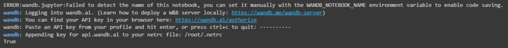
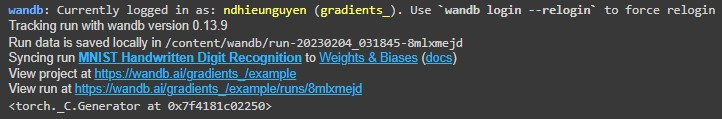
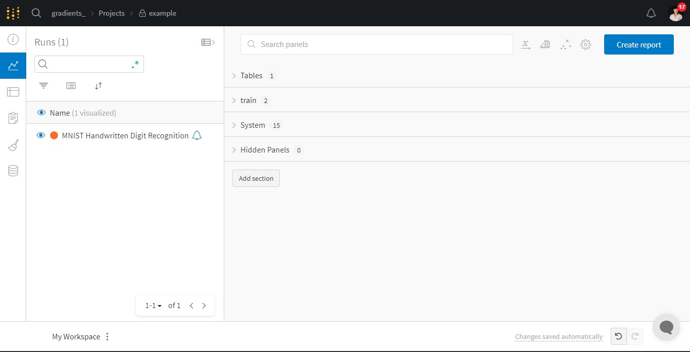
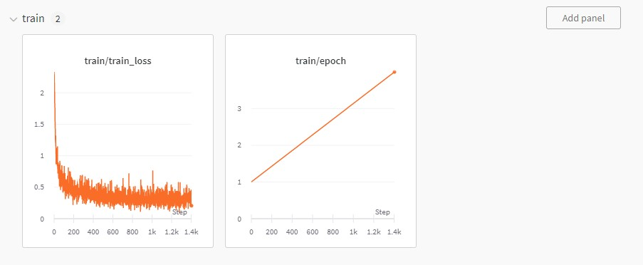
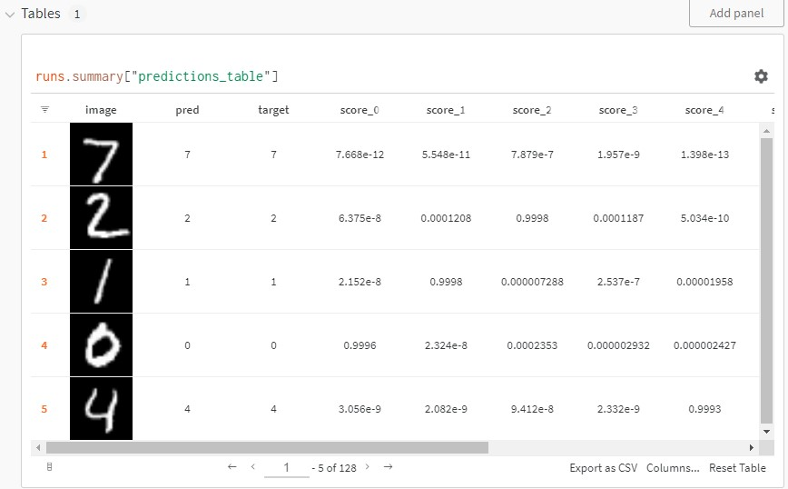

!pip install wandb -qUExample code
An example of using wandb in training a model
Dependency
Install dependencies, this will take a while to install wandb
Import packages
import torch
import torchvision
import torch.nn as nn
import torch.nn.functional as F
import torch.optim as optim
import wandb
import matplotlib.pyplot as plt
import mathWandb initiation
Get API key and log into your wandb acount
wandb.login()
Then we init wandb using project name (example), display name for this run (MNIST Handwritten Digit Recognition) and config for training model. Then we can get the config back for using in programming.
wandb.init(
project='example',
name='MNIST Handwritten Digit Recognition',
config = {
'n_epochs': 3,
'batch_size': 128,
'learning_rate': 0.01,
'log_interval': 10,
'random_seed': 1
}
)
config = wandb.config
torch.backends.cudnn.enabled = False
torch.manual_seed(config.random_seed)
As you can see, the result will be displayed at https://wandb.ai/gradients_/example (because my team’s name is gradients_ and my project name is example)
Data and model preparation
Then we load the MNIST dataset from torch’s DataLoader
train_loader = torch.utils.data.DataLoader(
torchvision.datasets.MNIST(root='.', train=True, download=True,
transform=torchvision.transforms.Compose([
torchvision.transforms.ToTensor(),
torchvision.transforms.Normalize((0.1307,), (0.3081,))
])
), batch_size=config.batch_size, shuffle=True, num_workers=2)
test_loader = torch.utils.data.DataLoader(
torchvision.datasets.MNIST(root='.', train=False, download=True,
transform=torchvision.transforms.Compose([
torchvision.transforms.ToTensor(),
torchvision.transforms.Normalize((0.1307,), (0.3081,))
])
), batch_size=config.batch_size, shuffle=False, num_workers=2)Now let’s take a look at some examples
examples = enumerate(test_loader)
batch_idx, (example_data, example_targets) = next(examples)
print(f"Example's shape: {example_data.shape}")
fig = plt.figure()
for i in range(6):
plt.subplot(2,3,i+1)
plt.tight_layout()
plt.imshow(example_data[i][0], cmap='gray', interpolation='none')
plt.title("Ground Truth: {}".format(example_targets[i]))
plt.xticks([])
plt.yticks([])
figDefine model architecture. Because this is just a small example, i only use a simple architecture.
class MNIST_model(nn.Module):
def __init__(self):
super(MNIST_model, self).__init__()
self.conv1 = nn.Conv2d(1, 10, kernel_size=5)
self.conv2 = nn.Conv2d(10, 20, kernel_size=5)
self.conv2_drop = nn.Dropout2d()
self.fc1 = nn.Linear(320, 50)
self.fc2 = nn.Linear(50, 10)
def forward(self, x):
x = F.relu(F.max_pool2d(self.conv1(x), 2))
x = F.relu(F.max_pool2d(self.conv2_drop(self.conv2(x)), 2))
x = x.view(-1, 320)
x = F.relu(self.fc1(x))
x = F.dropout(x, training=self.training)
x = self.fc2(x)
return F.log_softmax(x)Now let’s initialize the network and the optimizer
model = MNIST_model()
optimizer = optim.Adam(model.parameters(),
lr=config.learning_rate)Training and evaluation process
Define the training function.
def train(model, train_loader):
model.train()
n_steps_per_epoch = math.ceil(len(train_loader.dataset) / config.batch_size)
for step, (images, labels) in enumerate(train_loader):
outputs = model(images)
loss = F.nll_loss(outputs, labels)
optimizer.zero_grad()
loss.backward()
optimizer.step()
metrics = {"train/train_loss": loss,
"train/epoch": (step + 1 + (n_steps_per_epoch * epoch)) / n_steps_per_epoch
}
if step + 1 < n_steps_per_epoch:
wandb.log(metrics)
if step % config.log_interval == 0:
torch.save(model.state_dict(), 'model.pth')
torch.save(optimizer.state_dict(), 'optimizer.pth')
return modelDefine the evaluation function
def eval(model, test_loader):
model.eval()
loss = 0
with torch.inference_mode():
correct = 0
for i, (images, labels) in enumerate(test_loader):
outputs = model(images)
loss += F.nll_loss(outputs, labels)*labels.size(0)
_, predicted = torch.max(outputs.data, 1)
correct += (predicted == labels).sum().item()
# Plot some prediction using the first batch of test_loader, the plots will appear in wandb UI
if i==0:
probs = outputs.softmax(dim=1)
table = wandb.Table(columns=["image", "pred", "target"]+[f"score_{j}" for j in range(10)])
for img, pred, targ, prob in zip(images.to("cpu"), predicted.to("cpu"), labels.to("cpu"), probs.to("cpu")):
table.add_data(wandb.Image(img[0].numpy()*255), pred, targ, *prob.numpy())
wandb.log({"predictions_table":table}, commit=False)Train the model
for epoch in range(1, config.n_epochs + 1):
model = train(model, train_loader)
eval(model, test_loader)Testing
Make and plot some predictions using the trained model
with torch.no_grad():
output = model(example_data)
fig = plt.figure()
for i in range(6):
plt.subplot(2,3,i+1)
plt.tight_layout()
plt.imshow(example_data[i][0], cmap='gray', interpolation='none')
plt.title("Prediction: {}".format(output.data.max(1, keepdim=True)[1][i].item()))
plt.xticks([])
plt.yticks([])
figWonderful things of wandb
Go to your project in wandb (https://wandb.ai/gradients_/example in my case). You can see that there is a run generated from our training. In this run, there are 4 panels: Tables, train, System, Hidden Panels. To learn about training process, head to train panel. 
Because I only use 2 metrics in the training process, there are 2 graphs in the train panels. Using these graphs, you evaluate the performance of your model to have suitable adjustments 
Head to Tables panel, you can see some predictions from evaluation process that i implement in training iterations. 